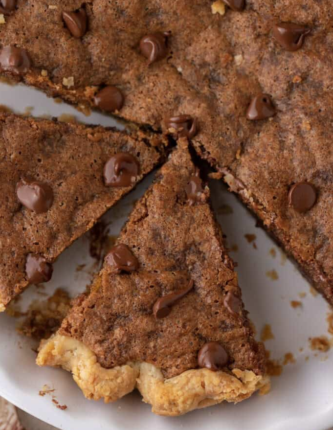

Cornbread Cookies

Decription
This Chocolate Chip Cookie Pie recipe is the ultimate dessert that combines the taste and gooey texture of a cookie with the flaky, buttery crust of a pie. Made with all of the same cookie ingredients plus a few tweaks, it’s the easiest dessert you can make to wow your guests and satisfy a craving.
Ingredients
- Granulated Sugar
- Brown Sugar
- Eggs
- All Purpose Flour
- Baking Soda
- Chopped Walnuts or Pecans
- Semi-sweet Chocolate Chips
- Baking Soda
- Pure Vanilla Extract
- Unsalted Butter
- Unbaked 9-inch Pie Crust
Steps
- Preheat your oven and place the pie crust in a 9-inch pie dish, crimp the edges, and set it aside.
- In a medium bowl, whisk the melted butter, granulated sugar, and brown sugar until smooth and well combined. Add the eggs one at a time, whisking thoroughly after each addition. Stir in the vanilla extract.
- In a separate large bowl, mix the flour, baking powder, and salt. Gradually fold the dry ingredients into the wet mixture, stirring until just combined.
- Gently fold in the chocolate chips and nuts if using.
- Pour the chocolate chip cookie dough into the prepared pie crust, spreading it out evenly.
- Place the pie in the oven and bake until the top is golden brown and set. The internal temperature of the cookie pie will be between 175F-185 degrees F when it is ready.
- Let the pie cool completely to room temperature on a wire rack before slicing.